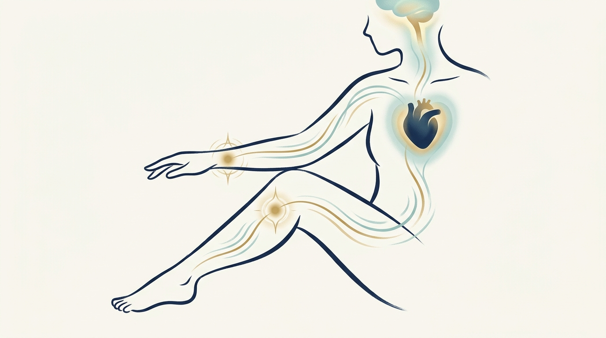

前立腺がんの鍼灸
男性ホルモンが関与する前立腺のがんです。泌尿器科の標準治療を最優先に、主治医許可のもと副作用や術後の心身負担を和らげる支持療法を行います。
まず知っておきたい要点と改善の流れ
前立腺がんは膀胱直下にある前立腺に発生するがんで、前立腺の悪性腫瘍の約9割を占めます。発症には男性ホルモンが関与し、加齢とともに増加（70代は50代の20〜60倍）するほか、人種や家族歴、食生活もリスク因子とされます。初期はほぼ無症状ですが、局所進行や合併する前立腺肥大症により排尿困難や頻尿が現れ、骨転移では腰痛が生じることもあります。標準治療は経過観察、全摘除術、放射線、ホルモン療法、抗がん剤が病状に応じて選択されます。（公式解説）
このようなお悩みはありませんか？
- ✓ホルモン療法や放射線治療による倦怠感・不眠がつらい
- ✓治療に伴うほてりや自律神経の乱れを整えたい
- ✓前立腺全摘除術後の体調回復や不安感をケアしたい
- ✓抗がん剤治療による手足のしびれや吐き気を和らげたい
当院の施術アプローチ・改善の流れ
なぜ鍼灸で改善へ向かうのか？（作用機序の図解）
前立腺がんに対する鍼灸は、迷走神経抗炎症反射と標準治療を支える支持療法機序を通じて、お体本来の回復力を引き出します。

手術創・リンパ節郭清側・患部を厳格に避け、内関・足三里・合谷など安全な経穴を刺激します。
内因性鎮痛系や延髄嘔吐中枢の抑制経路へ働きかけ、痛み・吐き気・しびれの軽減を助けます。
治療に伴う炎症性サイトカイン反応や過覚醒を穏やかに整え、倦怠感や不眠の負担を和らげます。
主治医の治療計画を最優先に、体力と生活の質を保ちながら治療を続けられる環境を支えます。
院長YouTube解説・関連動画
前立腺がんの症状は、排尿困難や頻尿など
前立腺がんの症状は、排尿困難や頻尿などです。
しかし、前立腺がんは初期段階では自覚症状のないことがほとんどで、前立腺局所でがんが進んだときに症状が見られることが多く、前立腺がんになることで発症した前立腺肥大症の症状であることも多いです。
症状が進むと、骨やリンパ節などに転移することもあります。骨に転移した場合は、腰痛などの症状が現れることもあります。
前立腺がんの改善方法は、経過を観察する方法、手術、放射線、ホルモンを使った改善方法、抗がん剤などです。年齢やがんの悪性度合いなど色々なことを考えた上で改善方法を決めます。
経過を観察する方法では、3～6ヶ月ごとに体の状態を調べ、1～3年ごとに前立腺を調べます。病状が悪化する兆候が見られたら、手術など改善に取り組むことを考えます。
手術の方法には、開腹手術、腹腔鏡手術、ロボット手術があります。手術の目的は、前立腺と精のうを摘出し、膀胱と尿道をつなぐ前立腺全摘除術を行うことです。場合によっては、前立腺の周りのリンパ節も一緒に取り除くこともあります。
前立腺がんの手術をした後に現れる可能性のある主な合併症は、尿失禁と性機能障害です。
手術の時に尿の排出を調節する筋肉に傷がつくと、尿道の締まりが悪くなり尿失禁が現れる可能性があります。尿失禁を防ぐために、手術ではできるだけ神経や尿道括約筋の温存を行いますが、完全に防ぐことは難しいです。
多くの場合、尿失禁は手術をした後数ヶ月は続きますが、半年くらい経つと生活に支障ない程度には回復すると言われています。
手術の直後は、勃起障害が起こることがほとんどです。勃起障害は完全に回復することが難しいです。どのくらい回復するのかについては、神経温存の程度や年齢、手術の前の勃起能などで違います。
手術を行った時に神経を温存している場合、飲み薬を使って改善を行うこともあります。
がんの種類のツボ図解とセルフケア
実際の施術ではお一人おひとりの体質・症状に合わせて選穴しますが、がん支持療法（標準がん治療に伴う疼痛・CIPN・悪心嘔吐・倦怠感のQOL緩和）の臨床でよく用いられる代表的なツボの目安です。

📌 代表的なツボの詳細一覧表を開く（6穴） ▼
| ツボ名 | 位置の目安 | 主な狙い | セルフケアの注意点 |
|---|---|---|---|
| 内関（ないかん） | 手首内側横ジワから肘側へ指3本分、2腱の間 | 化学療法誘発性悪心・嘔吐（CINV）・不安の緩和 | 乳がん腋窩郭清後の患側上肢は避け必ず健側を使用 |
| 合谷（ごうこく） | 手の甲、親指と人差し指の骨が交わる手前 | がん関連疼痛・頭痛・末梢しびれ（CIPN）緩和 | 患肢・浮腫側・点滴側は回避。血小板低下時は内出血注意 |
| 足三里（あしさんり） | 膝外側下のくぼみから指4本分下、すね外側 | 悪心・食欲不振・がん関連倦怠感（CRF）の緩和 | 骨転移・下肢リンパ浮腫・血栓疑いのある脚は避ける |
| 三陰交（さんいんこう） | 内くるぶし頂点から指4本分上、すね骨の後ろ際 | 倦怠感・睡眠の質・ホルモン療法のほてりケア | 骨盤内リンパ節郭清による下肢浮腫がある場合は回避 |
| 太衝（たいしょう） | 足の甲、親指と人差し指の骨が交わる手前 | 疼痛・ストレス・CIPNによる足部違和感の緩和 | 感覚鈍麻時はお灸熱傷・皮膚損傷に厳重注意 |
| 八風（はっぷう） | 足の甲、5本の足指のまたの付け根付近 | 化学療法誘発性末梢神経障害（CIPN）の足先しびれ | 好中球減少期・足部浮腫・傷がある場合は禁忌 |
国際査読論文の科学的エビデンス
国際的な医学データベース（PubMed・Cochrane等）で報告されているがん支持療法（標準がん治療に伴う疼痛・CIPN・悪心嘔吐・倦怠感のQOL緩和）領域の代表的な査読済み鍼灸研究をまとめています（標準治療との併用や研究上の限界を含めて正確に掲載）。
📚 査読論文データ・PubMed出典リンクを開く（4件） ▼
| 年・研究デザイン | 対象・規模 | 主な結果 | 限界・出典 |
|---|---|---|---|
| 2022年 国際診療ガイドライン | SIO-ASCO合同ガイドライン（227文献レビュー） | アロマターゼ阻害薬関節痛への鍼を推奨、一般的がん疼痛・筋骨格痛への鍼・指圧を推奨選択肢と明記（中等度）。 | がん自体を治す治療ではなく標準治療と併用する支持療法。 J Clin Oncol (PMID: 36122322) |
| 2020年 メタ解析 | がん関連疼痛 17 RCTs（n=1,111） | 偽鍼比で疼痛低減（MD -1.38）、鎮痛薬併用で疼痛低減（MD -1.44）およびオピオイド使用量減少（-30mg/日）。 | 異質性高くGRADE中等度。オピオイド調整は必ず主治医判断。 JAMA Oncol (PMID: 31855257) |
| 2020年 3群パイロットRCT | 化学療法誘発性末梢神経障害（CIPN）75名登録 | 通常ケア比で8週時の疼痛（p=0.05）・ピリピリ感（p=0.02）・しびれ（p=0.005）が有意改善、12週も持続。 | 単施設小規模パイロット試験。大規模検証が必要。 JAMA Netw Open (PMID: 32159808) |
| 2023年 メタ解析 | 化学療法誘発性悪心嘔吐（CINV）38 RCTs（n=2,503） | 通常制吐ケアへの併用で急性嘔吐（RR 1.13）・遅発性嘔吐（RR 1.47）の完全制御率が向上。 | GRADE低〜非常に低。標準制吐薬の上乗せ療法が前提。 Cancer Med (PMID: 37226372) |
参考文献・出典
- 銀座そうぜん鍼灸院「前立腺がんの公式解説ページ」
- 2022年 国際診療ガイドライン（SIO-ASCO合同ガイドライン（227文献レビュー））— J Clin Oncol (PMID: 36122322)
- 2020年 メタ解析（がん関連疼痛 17 RCTs（n=1,111））— JAMA Oncol (PMID: 31855257)
- 2020年 3群パイロットRCT（化学療法誘発性末梢神経障害（CIPN）75名登録）— JAMA Netw Open (PMID: 32159808)
- 2023年 メタ解析（化学療法誘発性悪心嘔吐（CINV）38 RCTs（n=2,503））— Cancer Med (PMID: 37226372)
よくある質問（FAQ）
Q. 骨転移がある場合でも腰痛に対して鍼灸を受けられますか？▼
Q. 前立腺がんのホルモン療法中や術後の不調にも対応できますか？▼
あわせて読まれる関連疾患（がんの種類）
アポクリン腺由来の皮膚がんです。専門医の手術や内臓精査を最優先に、主治医許可のもとで治療後の体調管理・QOL向上を支えます。
がんが分泌する物質や免疫反応で遠隔臓器に症状が出る症候群です。専門医の治療を最優先に、主治医許可のもとQOL向上を支える鍼灸を行います。
他臓器のがんが血流で脳へ転移した状態です。専門医の標準治療を最優先に、主治医許可と状態安定を前提にQOL向上を支える鍼灸を行います。
最初に発生した臓器が特定できない転移性がんです。専門医の標準治療を最優先に、主治医許可のもと副作用や心身負担を和らげる支持療法を行います。
消化管の粘膜下から発生する悪性腫瘍（GIST）です。専門医の手術や薬物療法を最優先に、主治医許可のもと副作用や術後負担を和らげます。
消化管に生じる進行の遅い悪性リンパ腫です。専門医の経過観察や標準治療を最優先に、主治医許可のもと心身負担を和らげる支持療法を行います。
おひとりで悩まず、まずはご相談ください
銀座本院・川口・大宮・横浜・博多・田無の各院でご予約を承っております。